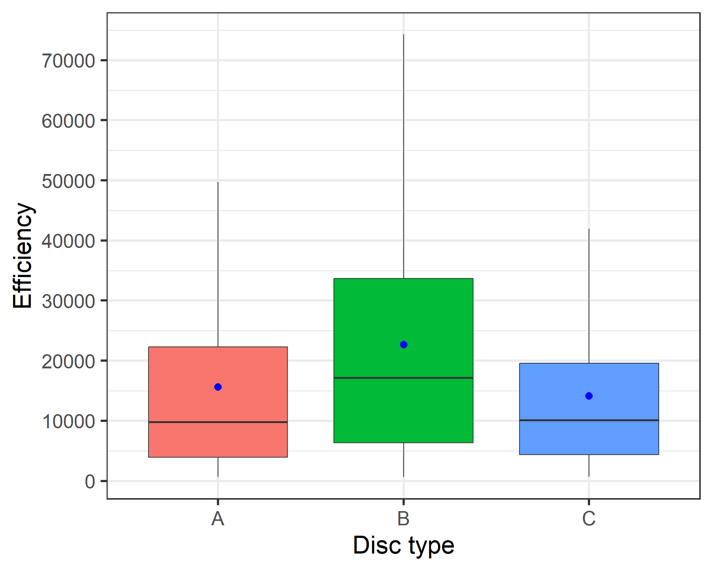
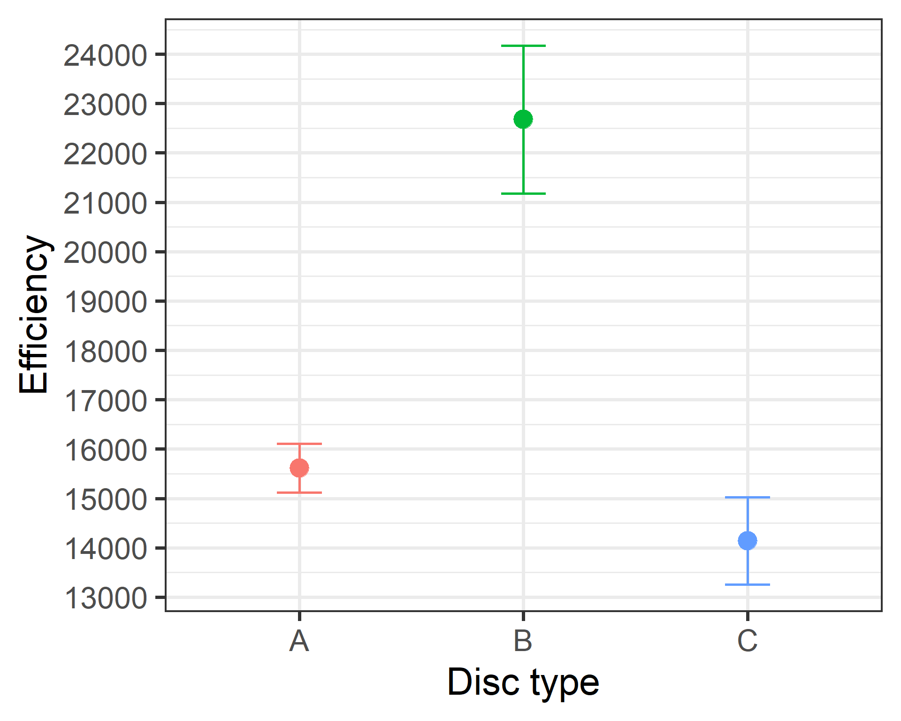
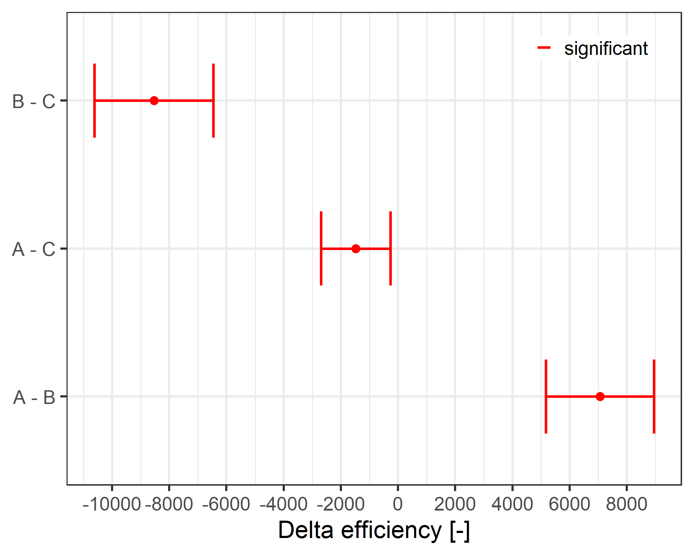
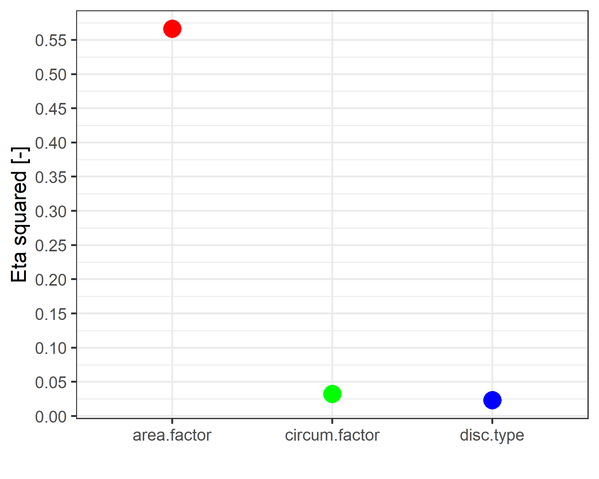

Investigation of cutting discs via ANOVA
Intro
Hot rolled steel bars have to cutted in certain customer needed lenght. Different cutting disc types can be applied for this process. We are going to try - by means of ANOVA - to figure out, which of three selected cutting discs have the best efficiency / lifetime.
The effect of following parameters (x-values) will be investigate on the efficiency (y-value) of cutting discs:
Disc type
Steel bar temperature
Circumferential speed of cutting machine
Feed speed of cutting machine
Carbon content of the steel bars
Area of the steel bars
Diameter of the steel bars
Get / Visualize Data
Confidence interval
In Figure 2 you can see the mean values of efficiency and the corresponding confidence intervalls (95%) for the three disc types. There are no overlaps between the the confidence intervals of disc types; it seems that the disc types differs each other in efficiency. We will proof that later via ANOVA!

Convert continuous data to categorical data
ANOVA needs continuous dependent variable and categorical independent variables. We will divide all (continuous) independent variables into four categories (quartile).
Levene-Test
Perform a levene test to proof the homogeneity of the variances - in the population - between the three groups (cutting-discs).
The homogeneity of the variances are a necessary condition to perform ANOVA. According to the levene test (p < 0.05) the variances in the population are not equal (homogeneous)! ; therefore the essential requirement to do ANOVA are not fulfilled. In this case there are alternatives like Welch-Test for one way (factor) ANOVA, but for multi-factor ANOVA there not alternatives.
Nevertheless, ANOVA is an robust method to detect significant differences in mean-values between groups (factors), if the sample size in groups are the same respectively the sample size is bigger than 10 per group; even though the variances of population are not equal.
ANOVA
According to the ANOVA there are significant differences between the mean efficiency of the cutting discs. It looks like, that the three cutting discs distinguish each other in efficiency.
By means of post-hoc-test we can figure out, which cutting discs distinguish each other.
Post HOC Test
Because the groups have not the same variance in the population (due to levene-test), we are going to apply games-howell post-hoc test. According to the games-howell-test the efficiency of the cutting discs distinguish each other significantly!
Visualize post-hoc results

Eta-squared (effect size)
Due to eta-squared the area of cutted bars has the biggest influence on the efficiency / lifetime of cutting discs! But the disc type and circumferential speed of the cutting machine has also an - albeit a small - effect on efficiency / lifetime.
